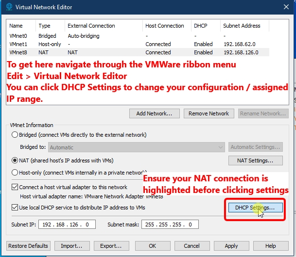
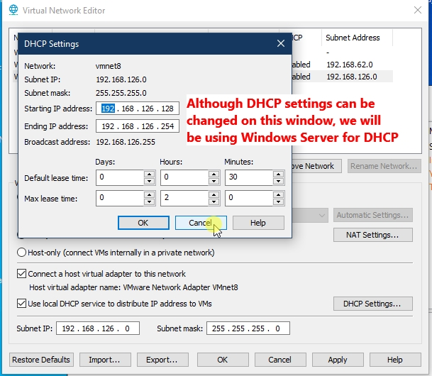
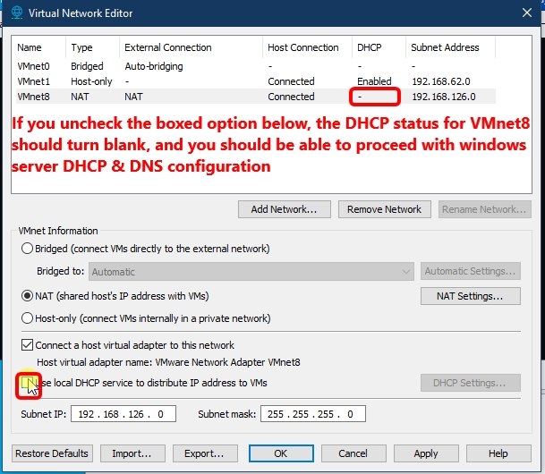
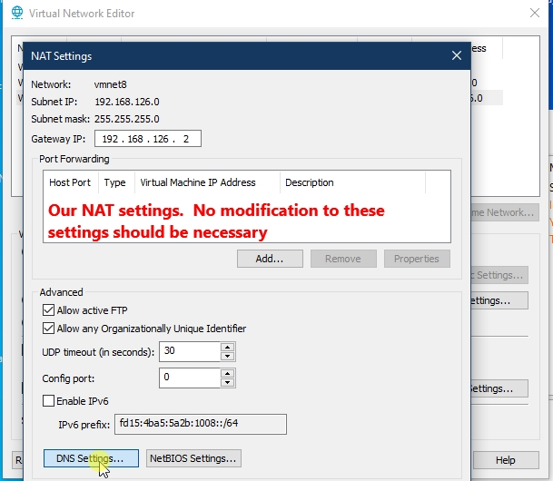

Network settings can be accessed in VMWare by going to Edit > Virtual Network Editor. On school PCs, you may not have the option to edit any of these, so it may be beneficial to get your IP address options from your school PC and edit your configuration at home to match You can open a command prompt by typing cmd in the search box and use the following commands:
On Ubuntu, we don't open a command prompt, but a terminal. You can right click on desktop and select "Open in termian" or open the termianl from your apps menu. You can use the following commands:
If VMWare's network settings can be configured on your PC, they will likely be found in: Edit > Virtual Network Editor...
   